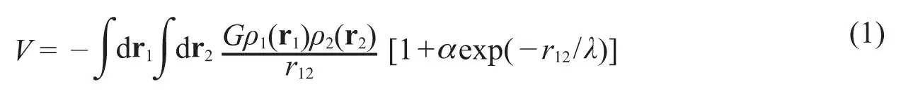
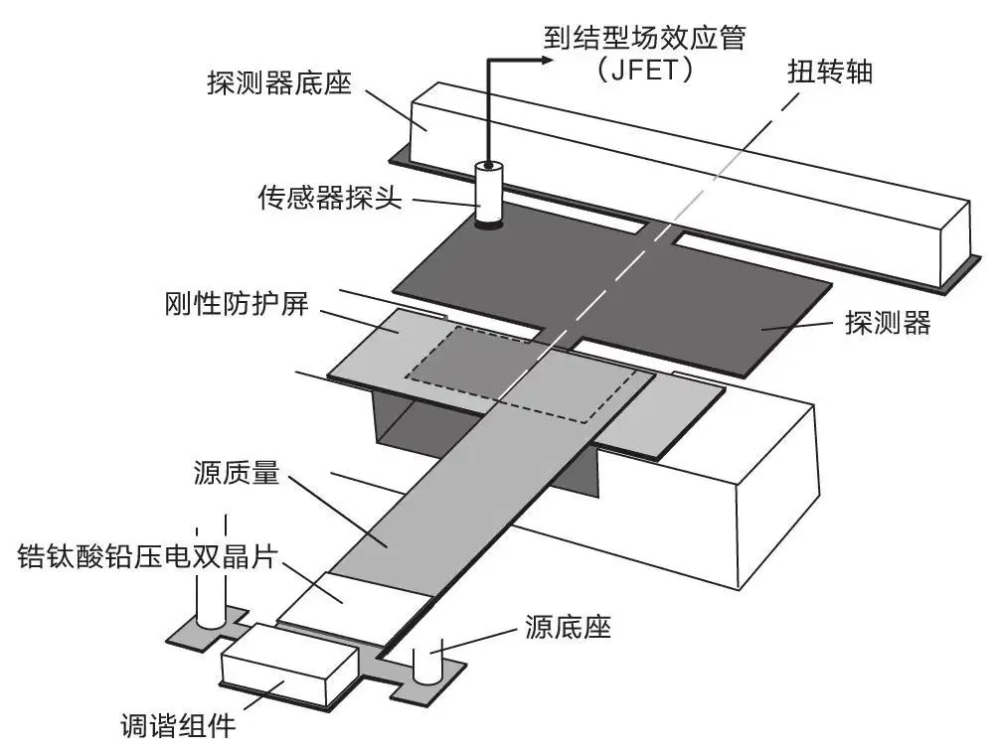
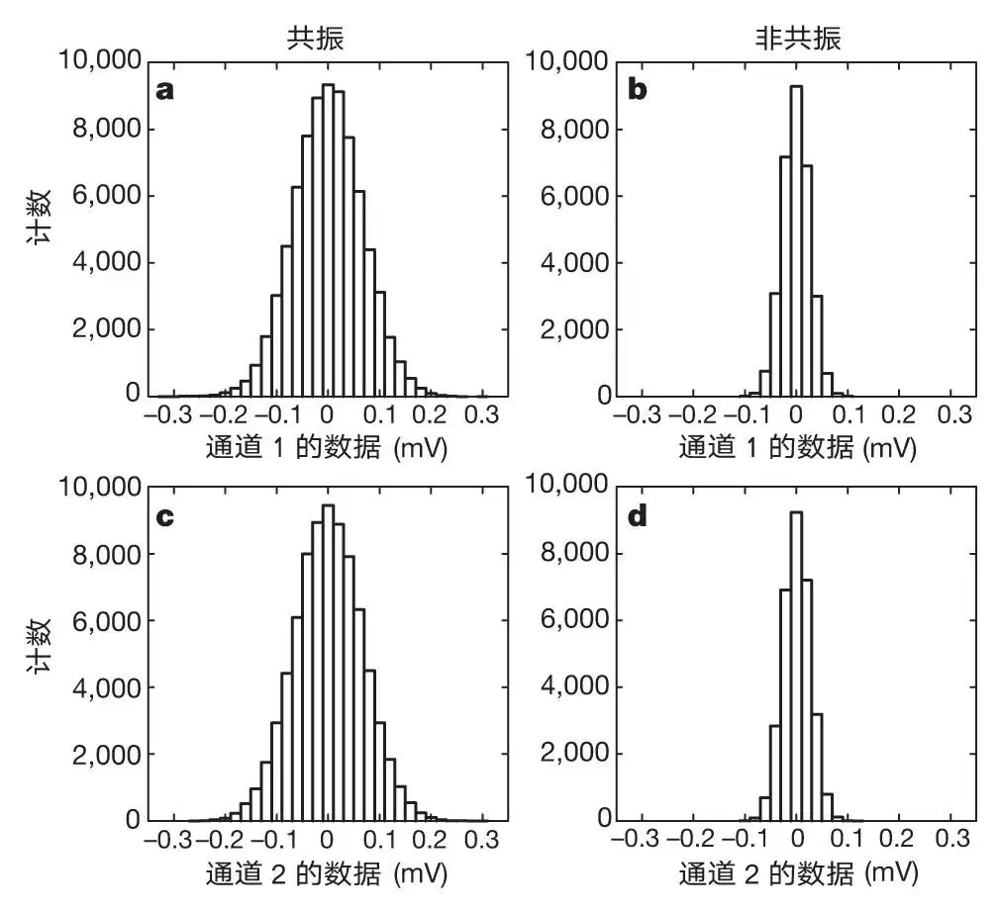
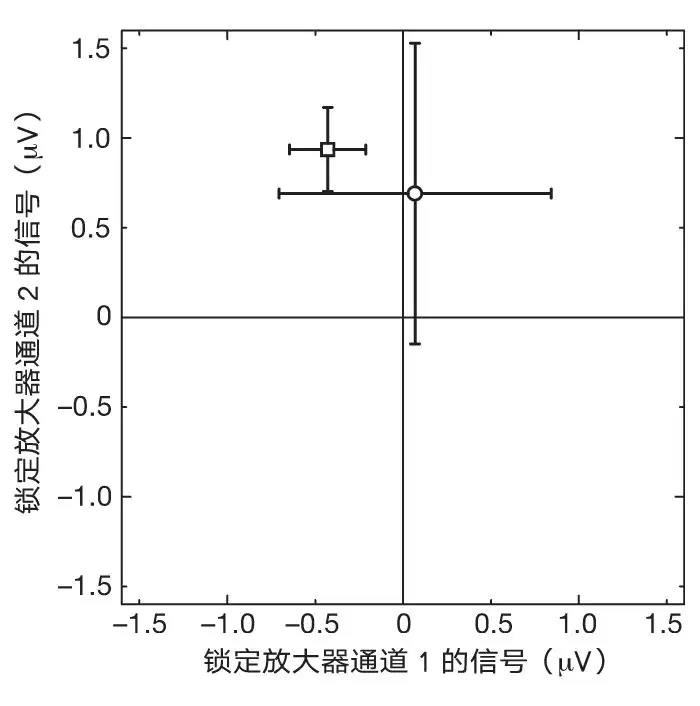
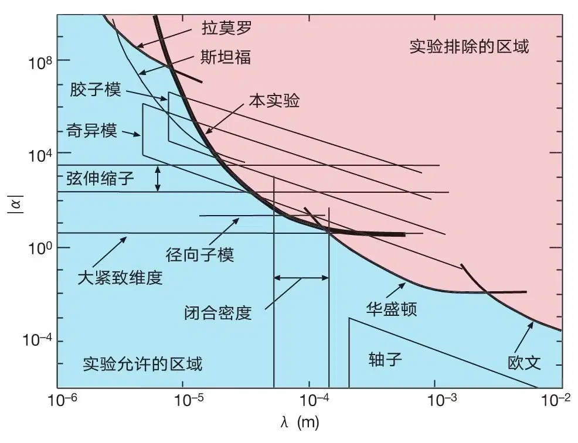

英文
英文朗等
编者按
引力是四种基本力中最弱的，比电磁力要小四十个数量级。在弦论——一个试图统一描述粒子和力的尝试——中，引力的弱性是由于引力向着六个额外的卷曲不可见维度泄漏导致的。已经有一些建议说这些卷曲维度的效应可能在很小的尺度下会变得很明显，在这些尺度上物体将会感受到更大的引力。本文中，物理学家乔舒亚·朗和合作者们介绍了一个实验，这个实验在100μm的尺度上寻找引力偏离通常熟知的平方反比律的迹象。他们发现没有这样的偏离。 英文
弦理论是人们一直在寻找的、统一自然界四种力和基本粒子的最有希望的方法[1]，但是现在仍然缺乏直接支持它的证据。除了我们观察到的三个维度之外，弦理论还要求存在六个额外空间维度。通常假定这些额外的维度卷曲成了很小的空间。这个“紧致化”诱导出了“模”场，用来描述时空中每一点紧致维度的大小和形状。根据最近的预测[2-7]，这些模场产生了和引力大小可比的力，可能能在100 μm尺度上被探测到。本文中，我们报告了以下工作：用相隔108 μm的两个平面振子来搜寻这一引力强度量级的力。结果未观察到新的力，从而排除了一大块之前对于奇异模力和胶子模力来说是允许的参数空间[4]，对弦伸缩子力[2,3]和径向子力[5-7]的力程给出了一个新的上限。 英文
由模力和牛顿引力结合得到的势能V可以写作

第一项是牛顿万有引力定律，G是引力常数，r12是检验质量位置r1和r2两点间的距离， 1，2是两个物体的质量密度。第二项是汤川势，α是新的力相对于引力的强度，λ是力程。对于任何传递相互作用的场，模力的力程和它的质量m存在如下关系λ=ℏ / mc。之前关于牛顿引力的检验和对于新的宏观力的搜寻涵盖了从光年到纳米的尺度[8-10]，已有结果表明，在200 μm到接近一个光年的尺度范围内不存在引力强度量级的新力[8,11,12]，但是在200 μm之下的尺度，对出现新力的限制会快速变弱（参考文献9和13）。 英文
1，2是两个物体的质量密度。第二项是汤川势，α是新的力相对于引力的强度，λ是力程。对于任何传递相互作用的场，模力的力程和它的质量m存在如下关系λ=ℏ / mc。之前关于牛顿引力的检验和对于新的宏观力的搜寻涵盖了从光年到纳米的尺度[8-10]，已有结果表明，在200 μm到接近一个光年的尺度范围内不存在引力强度量级的新力[8,11,12]，但是在200 μm之下的尺度，对出现新力的限制会快速变弱（参考文献9和13）。 英文
奇异模空间和胶子模空间出现在10~100 TeV下超对称（一个弦论中猜想的将玻色子和费米子联系起来的对称性）破缺的时候，而所有的紧致化过程则是发生在临近超高普朗克尺度（1019 GeV）上的（这些情况下的引力和其他力是统一的）。在这种情况下，可以预测出一个大约是毫米级的力程。伸缩子是弦理论自洽性所要求的一个标量场，它的真空值决定了弦之间相互作用的强度。它或许可以被理解成是M理论中描述第十个空间维度的尺度的模参数，这个空间维度在M理论中被做了紧致化来得到具有九个空间维度的弦论（M理论是将所有不同的弦论整合成一个框架的理论结构[1]）。和伸缩子相关的强度α可以通过计算得到，但是力程λ目前只能通过实验来限制，并且我们几乎不知道给出伸缩子质量的机制是什么。径向子是由一个完全不同的机制得到的，这一机制下一个或者多个额外维度的紧致化发生在TeV能标尺度上，但这里实验可以得到的力程λ也是预测出来的。 英文
毫米尺度特殊的重要性可以通过形如m≈M2 / MP的质量公式导出，这里MP是和普朗克尺度相关的质量1019 GeV / c2，M是1~100 TeV / c2的质量，导致λ的尺度在厘米到微米范围之间。在奇异模空间和胶子模空间中，M是超对称破缺发生的尺度，而在径向子模空间的情况下，它对应于一个或者多个紧致维度的尺度。这个公式适用于ADD理论[14]（根据其提出者们的姓名命名），这一理论中两个毫米尺度的紧致化额外维会修改引力。在ADD理论中，M是一个基本尺度，在这个尺度上所有的物理理论都是统一起来的，而m是对应于大的紧致化额外维尺度的质量。在许多紧致化图像中，对称性破缺和质量产生依然是可靠的，因此，尽管在毫米尺度上观察到新力的可能性是令人激动的，但这些实验目前还不能证伪弦理论。 英文
我们选择的源和探测器质量呈现为图1所示的平面几何，是为了使其尽可能地在感兴趣的尺度上集中更高的质量密度。它几乎不受1 / r2牛顿背景的影响，这在寻找一个新力的时候是一个有帮助的特征。钨制的源的悬臂模式（和跳水板的运动类似）在探测器共振频率的驱动下出现了19 μm的尖端振幅。钨探测器是双扭转振子[15]，在我们感兴趣的共振模式下，探测器的两个矩形部分绕着扭转轴反转，绝大部分振幅都被限制在防护屏和源下面的小矩形中。如果源和探测器之间存在一个质量耦合力的话将会驱动探测器的扭转运动。运动用电容传感器探测，跟着是一个前置放大器、过滤器和锁定放大器。为了压低由于静电和剩余气体产生的背景力，一个刚性的导电防护屏固定在两个检验质量之间。对于静止的源，源和探测器的距离调整到108 μm，整个仪器放在真空罩中，然后将压强控制在2×10－7 torr以下。 英文

图1．仪器的主要构成。钨探测器的小矩形（在防护屏下面）有11.455 mm宽，5.080 mm长，195 μm厚。探测器在1,300 ℃下退火以便增加它的机械品质因子Q到25,000。在操作上，探测器1,173.085 Hz的共振频率是通过主动地将探测器的温度控制在305 K来稳定下来。钨制的源有35 mm长，7 mm宽，305 μm厚。源的共振频率调制到探测器的共振频率，并由锆钛酸铅（PZT）压电双晶片驱动。防护屏是一个60 μm厚的蓝宝石板，两侧镀上了100 nm厚的金。检验质量和防护屏由三个分立的五步被动隔振层支撑[23]，每一个在1 kHz时提供了大约200 dB的噪音减弱。机械探头用来直接探测每个组分的相对取向和位置，还用来测量源的振幅。探测器的运动通过在探测器大矩形后面的角的上方100 μm处的一个圆柱形电容式探头来感知。探头通过一个100 GΩ的电阻在200 V电压上偏置，并且通过一个隔直流电容器连着一个SK 152的结型场效应晶体管（JFET）。JFET 100 mK的噪声温度足够用来探测305 K的探测器的热运动了。JFET前置放大器接着第二个前置放大器、过滤器，最后是一个两相锁定放大器。从电容式探头到锁定放大器输入的总电压放大了约1,600倍。一个晶体调控的振子给锁定放大器提供了一个参考信号，并且通过一个1∶10的升压变压器驱动源质量的PZT。 英文
图2展示了原始数据的直方图，当源的驱动频率在探测器的共振频率时和不在探测器的共振频率时都收集了数据。每个图都包含来自锁定放大器的一个通道的信号，对应于在驱动频率下探测器运动的两个正交模式中的一个。非共振分布的展宽是因为前置放大器的噪声，而共振分布的展宽来自前置放大器的噪声和探测器的热运动之和。图3中这个共振和非共振的平均值在标准偏差之内是吻合的，表明不存在一个显著的共振力的信号。 英文

图2．数据样本的分布。数据在1 Hz处收集，选取的锁定带宽包含了探测器热振动的噪声功率以用于校正。每个数据周期从120个样本的5次诊断运行开始，在防护屏上应用5~10 V的直流偏压，用来产生一个很大的检测力，然后通过防护屏的偏转在源到探测器之间传递。偏置运行在五个驱动频率下记录，这五个驱动频率之间间隔15 mHz从而覆盖探测器共振频率。防护屏之后接地，然后这个周期继续在驱动频率调到共振频率的720个样本（a和c）和驱动频率调到探测器共振频率以下2 Hz处的288个的样本（b和d）中进行。非共振运行提供了一个连续的零检验。五天时间内获得了共108个这样的循环，产生了77,760个共振样本。偏置诊断的数据显示源质量的振幅、探测器的品质因子Q和共振频率以及电子增益在整个数据集上都是稳定的。 英文

图3．非共振和共振数据样本的平均值。具有更大标准偏差的圆点是共振的平均值。邻近样本之间的关联在计算标准偏差时已经考虑进去了，标准偏差用误差棒来体现。原点处的微小偏移来源于锁定放大器内部的参考信号的溢出。去掉防护屏，并在源和探测器之间加上偏置电压进行了探测，结果显示吸引力的相位是189°。在189°，共振的平均值减去非共振的平均值是-0.44±0.82 μV。基于通过能均分定理的校正，这对应于一个在探测器边缘（图1中的小矩形）大小为-1.2±2.2 fN的集总力振幅，负号表明它是排斥力。 英文
更多的数据周期通过将源放在探测器的另外一侧获得，源和探测器之间有一个比之前大的、大小为1 mm的间隙，并且有着更小的交叠。在这些测量中都没有看到任何的共振信号，使得观测到的零结果不太可能源于表面势、磁和（或）声学效应的偶然抵消。设定不同的传感器探头的偏置电压获得了几次共振。在这些数据中观测到的方均根误差的涨落对于偏置电压的线性依赖和只由热噪声产生的探测器运动是自洽的，排除了传感器反作用噪声导致的额外运动。这个检查是重要的，因为探测器热运动的大小是被用来做校正的。 英文
来自诊断运行（在防护屏上施加偏置电压）的数据可以用来估计防护屏和（接地的）检验质量之间的剩余电势差的最小尺度，这个电势差是需要的，它可以产生一个共振信号。我们发现至少需要1.5 V的电压来产生一个高于探测器热噪声的效应，1.5 V大约比测得的在防护屏和检验质量之间的剩余电势差高一个数量级。最重要的磁背景效应是当源在外磁场运动时产生的涡流。源电流产生的场在探测器中产生了涡流，涡流之后会和外部的场相互作用。关于这个大施加磁场带来的效应的研究表明，周围实际存在的场所产生的信号，不能大于热噪声限制给出的灵敏度的五分之一。 英文
这个实验器材可以通过几种方式校正，但是最准确的方法是用探测器的方均根热运动进行校正，它在图2的共振分布中占主导。根据能均分定理，每个探测器正则模式的平均动能等于 kT；k是玻尔兹曼常数而T是温度。对应于热能的正则模式的振幅可以算出来，比较它和观测到的电压涨落，可以通过将模式振幅和电压联系起来建立一个校正。如果要寻找任何假设存在的力所产生的模式振幅，需要进行更进一步的计算。 英文
kT；k是玻尔兹曼常数而T是温度。对应于热能的正则模式的振幅可以算出来，比较它和观测到的电压涨落，可以通过将模式振幅和电压联系起来建立一个校正。如果要寻找任何假设存在的力所产生的模式振幅，需要进行更进一步的计算。 英文
对于给定的α和λ的值，由方程（1）给出的驱动力在源相位取的30个值下用蒙特卡罗积分计算，然后算出驱动力在共振频率下的傅里叶振幅。用观测到的数据统计，我们对每个λ的值构建了一个α的似然函数，然后在假定了一个α的均匀先验概率密度分布函数（PDF）的基础上，在95%的置信度上计算了α的上限。由于计算驱动位移时所需要的几何和动力学参数存在不确定性，这个分析会变得复杂。为了包括这些效应，我们实际上构建了一个α和这些不确定参数的似然函数，然后基于实验不确定性，利用先验概率密度分布函数积掉了不确定的参数。这些参数中最重要的是在源和探测器之间具有6 μm不确定性的108 μm平衡间隙。分析方法的进一步细节在其他论文中给出[16]。 英文
图4展示了我们的结果，其中也包括其他实验的限制和理论的预言。我们的限制在10 μm到100 μm范围内是已知的方法中最强的。当胶子模力和奇异模力第一次被提出的时候，它们在（α, λ）参数空间中所允许的区域分别是4.4和5.2个单位。现在它们除了0.75和1.4个允许的单位外，其余的都被排除了。关于α=2,000的伸缩子的范围，我们的限制是λ<23 μm（对应于m>8.6 MeV），比之前的极限好上一倍。对于径向子的模空间，我们给出了一个λ=88 μm的上限，接近理论（一个额外维）预言的40 μm的值。对于有两个大的额外紧致维度的ADD理论，我们并没有达到文献11和12中给出的关于这些维度的大小的极限。 英文

图4．目前1 μm到1 cm之间的新引力强度的限制。我们的结果是一个在95%置信度上汤川强度α函数的上限，它是关于力程λ的函数（粗体实线）。之前的实验（拉莫罗[24]，华盛顿[12]，欧文[25]）给出的极限以及理论预言给出的新极限也一并展示在图中（胶子模[4]，奇异模[4]，弦伸缩子[2]，径向子模[7]）。一个来自斯坦福的未发表的实验[26]也展示在图中，它是在存在背景力的前提下得到的。伸缩子的强度某种意义上是依赖于模型，在文献中有一个取值范围[2]。我们选择区域200<α<3,000，它包含了大部分的值。图中也展示了分别由具有两个大的紧致额外维度的ADD理论[14,27,28]，轴子传递的力[20,21]以及宇宙学能量密度在1.0到0.1倍闭合能量密度之间的λ区域[17]所给出的预言结果。对于模空间、伸缩子和ADD理论，展示的λ区域的上界设置在理论提出时人们已知的实验所能达到的极限。 英文
除了来自额外维的力，还有其他两个想法可以在亚毫米尺度给出新的弱的相互作用。用来闭合宇宙的宇宙学（临界）能量密度，如果通过做它的负四次方根来得到一个长度（在自然单位制下ℏ=c=1），结果大概是100 μm。这个事实使得人们不断尝试[17-19]通过引入一个力程大约100 μm的力来解决爱因斯坦的宇宙学常数的观测值很小所带来的困难。我们的结果是这个区域内能得到的最好的上界，但是我们还没有达到引力的灵敏度。最后，这些预言中最古老的一个，也是目前依然探测不到的，是很微弱的轴子传递的相互作用[20,21]。轴子的引入是为了解释为什么在量子色动力学（强核力的理论）中电荷–宇称对称性的破缺是如此的微小。 英文
本文报道的这类实验对预测在亚毫米尺度上存在额外力的类弦理论给出了一个很强约束性的极限。当然，能够观测到任何新的力都将是一个巨大的进步。因为一些理论特别地指向了这些尺度，未来在更小的距离（可能低至10 μm以下）上到达引力的强度将是一个重要的目标。试图到达这个距离的实验将会面临更快速增长的背景力，尤其是由于金属表面空间不均匀的势所产生的静电力[22]。表面势产生的电场可以被良导体屏蔽，但是由于任何防护屏都有有限的刚性系数，它们依然会造成表面力在检验质量之间传递。延展的膜（即华盛顿课题组所使用的材料）在小距离下比刚性的盘更加有效，但是低至多大的距离下背景力可以被有效地压低还不能确定。 英文
（安宇森 翻译；蔡荣根 审稿）